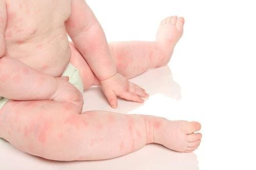
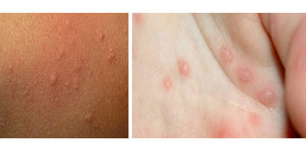
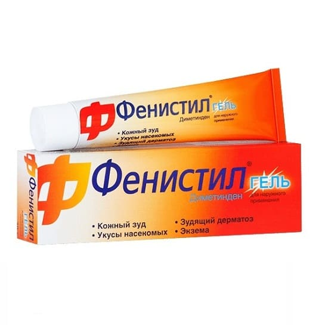

Крапивница — это белые и/или красные пятна или полосы различных размеров, приподнимающиеся над поверхностью кожи. Они могут быть маленькими, как ластик на карандаше, и большими, как серебряный доллар или два. Они практически всегда вызываются аллергической реакцией. Крапивница обычно возникает неожиданно, чаще всего на туловище (грудь, живот или спина), и быстро распространяется на другие участки, включая конечности. На лице пятна появляются редко.
В большинстве случаев крапивница — не повод для посещения врача. Вот наши советы по диагностированию и лечению крапивницы. За информацией о более серьезных аллергических реакциях (отек горла, лица, рук или ног, затрудненное дыхание).
КАК ОПРЕДЕЛИТЬ
Самый простой способ определить, является ли сыпь вашего ребенка крапивницей, — просто понаблюдать за ней в течение часа (если только аллергическая реакция не доставляет ребенку неудобств). При крапивнице сыпь часто пропадает на одном участке и появляется на другом, постоянно передвигаясь и изменяясь через несколько часов. Крапивница также обычно сопровождается зудом. Явную крапивницу можно лечить оральными антигистаминными препаратами, отпускающимися без рецепта. Если пятна уменьшаются или полностью исчезают, вы можете быть уверены, что это крапивница. Если пятна не пропадают, возможно, это другой вид сыпи, так называемая полиморфная эритема.

ПРИЧИНЫ
После того как вы определили, что у вашего ребенка крапивница, следующим шагом должно стать выяснение причин. На самом деле все причины — аллергические, но родители и врачи часто не могут выяснить, что именно провоцирует это заболевание. Вот самые распространенные из обнаруженных причин.
Вирусное заболевание. В большинстве случаев крапивница возникает просто потому, что организм отвечает аллергической реакцией на общее вирусное заболевание. Такие случаи могут сопровождаться лихорадкой и другими признаками заболевания наряду с крапивницей. Антигистаминные препараты должны уменьшить сыпь, хотя они не воздействуют на вирус.
Пищевая аллергия. Это следующая по распространенности причина. Как правило, виновниками являются арахис, орехи, моллюски или ягоды. Хотя на самом деле любая пища может спровоцировать у ребенка аллергию. Подумайте, что нового он съел в последние несколько часов. Если вы ничего не припоминаете, вспомните, что он ел вчера. Если ничего не приходит на ум, не беспокойтесь. Зачастую пищевой виновник не очевиден. Если повторяющиеся случаи продолжатся, пищевой дневник поможет вам сузить круг «подозреваемых».
Лекарства. Это еще одна обычная причина крапивницы, но чаще у взрослых. Антибиотики часто вызывают крапивницу, но любое новое лекарство может подействовать таким же образом. Прекратите прием всех новых препаратов, которые получает ваш ребенок, и обратитесь к врачу. Если ребенок принимает антибиотики, лучше подождать день-два, пока реакция не уменьшится, прежде чем начинать прием новых, если только инфекция, которую вы лечите, не очень серьезна.
СОВЕТ ДОКТОРОВ СИРС: ОТНОСИТЕСЬ К ЭТОМУ ПРОЩЕ Если ни одна из этих причин не подходит в вашем случае, не утомляйте себя, пытаясь найти причину. Если крапивница переходит в хроническую или повторяющуюся, следует провести обследование. |
Раздражители кожи. Новое мыло, шампунь, лосьон, стиральный порошок, новая одежда, которую еще не стирали, или тесный контакт с кустами и травой могут вызвать сыпь.
Как долго держится крапивница? На любом участке тела крапивница может держаться от нескольких часов до нескольких недель. Даже после того, как причина, вызвавшая сыпь, ликвидирована, тело может продолжать реагировать. Кроме того, можете ожидать возвращение крапивницы после того, как очередная доза лекарства перестает действовать. Это не является признаком ухудшения состояния.
ЛЕЧЕНИЕ
Легкие случаи. Если у вашего ребенка крапивница была один-два раза, и она не доставляла беспокойства, ничего не надо делать. Самое большее, прикладывайте холодные компрессы и наносите противозудный крем. Наблюдайте за ребенком на предмет признаков ухудшения состояния.
Выраженная крапивница. Если вы сразу же замечаете множественное проявление крапивницы, лучше всего дать антигистаминный препарат, чтобы остановить аллергическую реакцию, прежде чем она станет слишком серьезной. Существует большой выбор антигистаминных кремов, которые можно купить в любой аптеке (например, фенистил в виде геля). Они действуют не так хорошо, как оральные препараты, но их можно использовать отдельно или совместно с ними. Если вы наносите крем на обширные участки кожи, убедитесь, что одновременно не давали ребенку оральный антигистаминный препарат, иначе возможна передозировка. Использование обеих форм препарата безопасно, только если крем наносится на небольшие участки.
Не злоупотребляйте. Не нужно пичкать ребенка антигистаминными препаратами, просто чтобы держать под контролем каждое пятнышко крапивницы. Ничего страшного не произойдет, если останутся несколько пятен — при условии, что они не причиняют беспокойства вашему ребенку.

КОГДА БЕСПОКОИТЬСЯ
Ниже приведены признаки, которые помогут вам решить, нужно ли обращаться в отделение неотложной помощи сразу же или можно подождать приема у своего врача:
Выраженная аллергическая реакция. Одышка, спазм в горле, затрудненное дыхание или глотание, сильная рвота и/или диарея, слабость, головокружение, чрезмерная бледность или значительный отек рук, ног или лица — это все признаки выраженной реакции. Вызывайте «Скорую помощь», если вы заметили что-то из этого. Возможно, будет сделана инъекция адреналина, чтобы повернуть вспять эти сильные симптомы.
Умеренная аллергическая реакция. Для лечения крапивницы, сопровождающейся небольшим отеком рук, ног или лица без проявления других признаков выраженной аллергии, следует обратиться к врачу, который назначит антигистаминные препараты и стероиды.
Длительно сохраняющаяся крапивница или лихорадка. Если ребенок в целом чувствует себя хорошо, но вам приходится давать ему антигистаминные препараты на протяжении более двух недель, лучше всего обратиться к врачу, который проконтролирует ситуацию. Также обратитесь к врачу, если несколько дней держатся лихорадка или другие признаки заболевания.
Здоровье ребенка от докторов Сирс / Сирс У. и др.